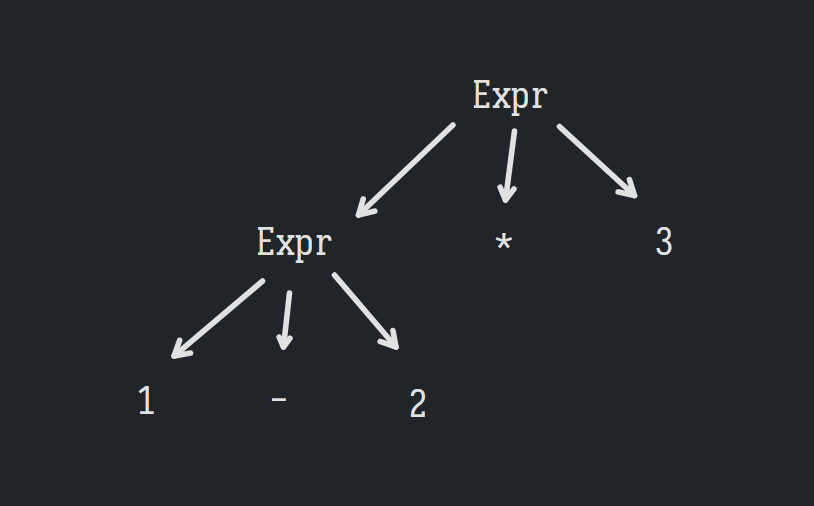
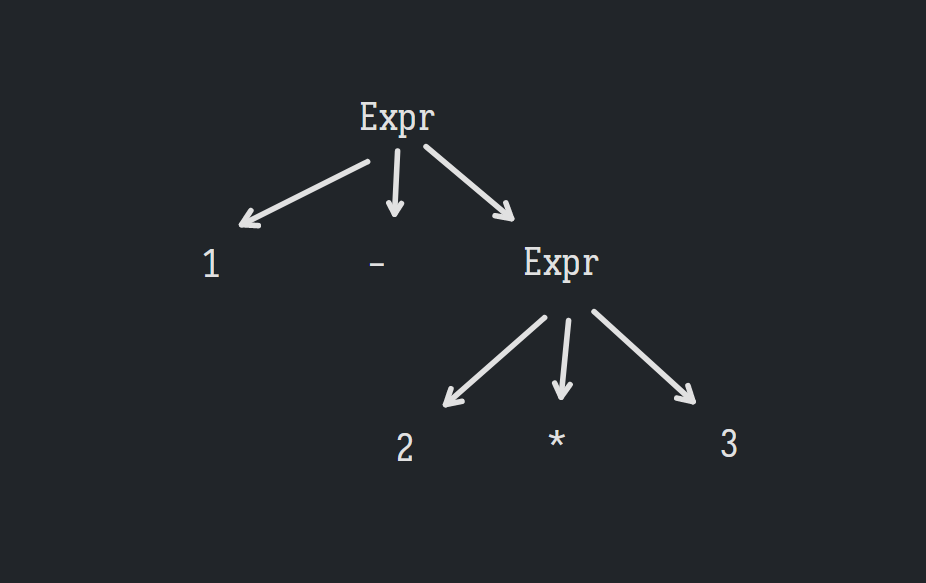

最近感觉缺乏热情，找点新东西玩玩。编译原理是个好选择，之前半途而废了，这次能继续下去吗？
跟随 Crafting Interpreters 这本书去学习，首先是用 java 实现一个 tree-walk interpreter，即生成 AST 之后直接进行解释执行。
编译/解释有诸多步骤，每一步都是为了让下一步实现起来更方便。第一步是 scanning，即词法分析，把源代码的字符串读入为 token，比如有一行代码 var language = "lox";，词法分析的结果是[var, language, =, "lox", ;]。一般来说空白字符会被忽略，但某些语言中缩进很重要，比如 Haskell 和 python，这些语言中的空格显然也会被当作 token。
token 是后续分析的“原子”，词法分析就是把源代码中的字符去进行分组得到 token 序列。要分组，就得有个分组的规则，称为词法 lexical grammar，这个规则需要预先定义，定义该规则，就是定义何为“词汇”，这里它叫词素 Lexeme，最小的意义单位。
词素仍然是普通的字符串，不带有语义，但可以根据词素和相关信息去获得对应的 token（这话怎么理解？一个词素可能是关键字，也可能是标识符，得看它出现的位置？像 SQL 这样的语言确实有类似的例子……但这事要在词法分析阶段处理吗？）。但为了方便，我们识别词素时就要知道它的类型——操作符，字面量，关键字，字面量。
词素更多是概念性的，在代码里没有直接表示它的结构。
Scanner 识别词素是 scanner 的工作，scanner 要知道哪个字符属于哪个词素。从源代码中第一个字符开始，scanner 检查每个字符，并识别和消费它以及和它处在同一个词素中的字符，到达词素结尾时，便丢出相应的 token。scanner 循环执行该过程，直到到达字符串结尾，生成一个 token 序列。
scanner 有两个必须的状态——start，标识正在扫描的词素的开始位置，current 表示正在处理的字符的位置，这里需要维护 start，是因为我们需要知道从 start 到 current 之间的子字符串的信息。如果有必要，current 可能会再倒回 start，重新开始处理。处理完一个词素后，start 再指向 current，即去处理下一个词素。
为了在出错时方便地指定行数，也可以增加一个 line 状态，去指示当前 current 的所在行。
下面的代码展示了 scanner 运行的基本流程：
List<Token> readTokens () {while (!isAtEnd()) {return tokens;void scanToken () {char c = advance(); switch (c) {
获取 token 时，有三个方法用来帮助读取字符：
1 2 3 4 5 6 7 8 9 10 11 12 13 14 15 16 17 18 19 20 21 char advance () {return source.charAt(current++);boolean match (char expected) {if (isAtEnd()) return false ;if (source.charAt(current) != expected) return false ;return true ;char peek () {if (isAtEnd()) {return '\0' ;return source.charAt(current);
操作符 如果所有词素只有单个字符，如()[]+-*/;这些，读 token 时直接读到这单个字符便可直接构造 token——
1 2 3 4 5 6 7 8 9 10 11 12 13 14 15 16 17 18 19 void scanToken () {char c = advance(); switch (c) {case '(' : addToken(LEFT_PAREN); break ;case ')' : addToken(RIGHT_PAREN); break ;case '{' : addToken(LEFT_BRACE); break ;case '}' : addToken(RIGHT_BRACE); break ;case ',' : addToken(COMMA); break ;case '.' : addToken(DOT); break ;case '-' : addToken(MINUS); break ;case '+' : addToken(PLUS); break ;case ';' : addToken(SEMICOLON); break ;case '*' : addToken(STAR); break ;default : "Unexpected character." ); break ;
这里没有包括!<>=，因为这些字符既可能是单字符的词素如!，也可能是双字符的词素如!=，但这个也好办，往后再看一位就行了：
void scanToken () {char c = advance(); switch (c) {case '!' :'=' )? BANG_EQUAL : BANG);break ;case '=' :'=' ) ? EQUAL_EQUAL : EQUAL);break ;
除法/需要特别考虑，//是单行注释的语法，其后的东西将被忽略，直到遇到换行符。
所以遇到/时，要检查下一个字符是否也是/，如果真的是，反复移动 current，直到遇到换行符，保证 current 最终指向换行符。
case '/' :if (!match('/' )) {break ;while (peek() != '\n' && !isAtEnd()) {break ;
像 peek 这样检查当前字符但不把指针往后拨的操作称为“lookahead”，前向搜索。这里只是查询当前字符，称作前向搜索 1 个字符。语言的词法决定我们需要使用多少个字符的前向查找，字符数量越多性能越差，但很多语言的实现中只需要一两个字符的前向查找。
其实 match 也是前向搜索，它 peek 一下当前字符是否和需求匹配，匹配成功了才消费当前字符。
然后，是需要忽略的各种字符——
case '\n' :case ' ' : case '\r' : case '\t' : break ;
字符串字面量 下一个对手是字符串字面量，即形如"Hello"的玩意。先不考虑字符串中出现双引号的情况。字符串相对好搞定，因为它的第一个字符永远是双引号。
1 2 3 4 5 6 7 8 9 10 11 12 13 14 15 16 17 18 19 20 21 22 case '"' : string(); break ;void string () {while (peek() != '"' && !isAtEnd()) {if (peek() == '\n' ) line++; if (isAtEnd()) {"Unterminated string." );return ;val literal = source.substring(start + 1 , current);
字符串支持多行比只支持单行实现起来更方便，但这中间必须得插入维护 line 的逻辑……其实这个可以加到 advance 方法里。
数字字面量 lox 中只有 double 来表示数字，和 js 一样，为了实现方便，不允许前导和后导小数点（方便实现123.sqrt()这样的调用）。
数字字面量的“trigger”也是容易找的——0-9，找后面连续的数字，若遇到小数点，需要检查小数点后一位是否也是数字。
1 2 3 4 5 6 7 8 9 10 11 12 13 14 15 16 17 18 19 20 21 22 23 24 default :if (isDigit(c)) {break ;void number () {while (Character.isDigit(peek())) {if (peek() == '.' && Character.isDigit(peekNext())) {while (Character.isDigit(peek())) {
关键字和标识符 最后了，关键字以及标识符。匹配这玩意要满足最长匹配原则——如果当前看的玩意的部分同时满足两条词法，找最长的，比如有个forever，不能光看到这个for就认为它是关键字了，forever整个是合法的标识符，它比关键字更长。
实际上，关键字本身就是标识符，只是这些标识符被语言预先使用罢了，这也是为什么它们也叫保留字。检查标识符时，需检查它是否是保留字，这需要一个符号表去做映射。
读取标识符的逻辑也放在 default 里：
1 2 3 4 5 6 7 8 9 10 11 12 13 14 15 16 17 18 19 20 21 22 23 24 25 26 27 28 29 30 default :if (isDigit(c)) {break ;else if (isAlpha(c)) {break ;boolean isAlpha (char c) {return (c >= 'a' && c <= 'z' ) ||'A' && c <= 'Z' ) ||'_' ;boolean isAlphaNumeric (char c) {return isAlpha(c) || isDigit(c);void identifier () {while (isAlphaNumeric(peek())) {val value = source.substring(start, current);
对下面的代码：
fun fib (n ) {go (n, a, b ) {if (n == 0 ) {return a;return go (n - 1 , b, a + b)return go (n, 0 , 1 )
得到：
1: [ FUN : fun ] [ IDENTIFIER : fib ] [ LEFT_PAREN : ( ] [ IDENTIFIER : n ] [ RIGHT_PAREN : ) ] [ LEFT_BRACE : { ]6: [ FUN : fun ] [ IDENTIFIER : go ] [ LEFT_PAREN : ( ] [ IDENTIFIER : n ] [ COMMA : , ] [ IDENTIFIER : a ] [ COMMA : , ] [ IDENTIFIER : b ] [ RIGHT_PAREN : ) ] [ LEFT_BRACE : { ]7: [ IF : if ] [ LEFT_PAREN : ( ] [ IDENTIFIER : n ] [ EQUAL_EQUAL : == ] [ NUMBER : 0 ] [ RIGHT_PAREN : ) ] [ LEFT_BRACE : { ]8: [ RETURN : return ] [ IDENTIFIER : a ] [ SEMICOLON : ; ]9: [ RIGHT_BRACE : } ]10: [ RETURN : return ] [ IDENTIFIER : go ] [ LEFT_PAREN : ( ] [ IDENTIFIER : n ] [ MINUS : - ] [ NUMBER : 1 ] [ COMMA : , ] [ IDENTIFIER : b ] [ COMMA : , ] [ IDENTIFIER : a ] [ PLUS : + ] [ IDENTIFIER : b ] [ RIGHT_PAREN : ) ]11: [ RIGHT_BRACE : } ]12: [ RETURN : return ] [ IDENTIFIER : go ] [ LEFT_PAREN : ( ] [ IDENTIFIER : n ] [ COMMA : , ] [ NUMBER : 0 ] [ COMMA : , ] [ NUMBER : 1 ] [ RIGHT_PAREN : ) ]13: [ RIGHT_BRACE : } ]14: [ EOF : ]
总结 这些玩意实际上也可以用正则表达式处理，但为了学习起见，这里手写。使用正则表达式的话，维护 line 就有点不明显，估计需要每次匹配成功后都检查上次和这次匹配之间的子字符串中有多少个换行符。
这种功能和正则表达式相同的玩意称为正则语言 regular language，它有一定限制——不能记忆之前的匹配情况，因此不能处理嵌套。
代码表示 这节真 tm 抽象。记录一下 原文地址 。
语法分析，BNF Token 相较于原始字符串乃至于词素已经是一个更丰富和抽象的概念了，但这还不够，需要根据 token 序列去得到一种更丰富和抽象的代码表示，parser 需要能够简单地生成它，interpreter 需要能够简单地使用它。这里的代码表示是树，就像 lisp 那样的玩意（但也有其他的代码表示，比如字节码）。
处理 token 序列时，再不能像词法分析一样使用类似正则语言的玩意来进行处理——需要考虑任意深度嵌套的情况，这是编程语言必须的。要能够做到这一点，需要一把新锤子——上下文无关文法 context-free grammar（CFG） ，它是一种形式文法 formal grammar 。 这里的上下文指的是分析特定符号/规则时它的上下文，上下文无关也就是说文法的规则只取决于规则本身，和周围环境无关，听上去就很纯。
应该如何理解「上下文无关文法」？ - 徐辰的回答 - 知乎
词法分析是词法 lexical grammar，这里是语法 syntactic grammar。词法处理的原子是字符，字符组合产生词素和 token，词法由 Scanner 实现；语法处理的原子是 Token，Token 组合产生表达式（并非语言上的表达式），语法由 Parser 实现。
语法由规则组成，规则也叫产生式 ——规则可以产生语法中合法的字串。一个规则分为两部分——head 和 body，分别表示规则的名称，以及该规则会产生什么（token 串的形式）。body 由终结符和非终结符组成，前者就像语法中的“字面量”，后者为其他规则——这让规则之间可以组合，直接进行代换即可。在上下文无关文法中，head 部分总是只有一个符号——该规则和周围的环境不相关 。
多个规则可以引用同一个名称，表示该规则可以产生多种 token 串。规则的 body 中可以引用自己。
一种描述这些产生式的语言是 BNF，BNF 也有自己的语法，类似正则，但原子是整个符号而非字符。
1 2 3 4 5 6 7 8 9 10 11 12 13 14 15 16 17 18 breakfast → protein "with" breakfast "on the side" ;
根据这些规则，我们能生成任意满足这些语法的符号串，注意下面的树形结构。
然后是 EBNF，支持括号，|，*，+，?，它们的语义和正则的相同：
breakfast → protein ( "with" breakfast "on the side" )?| bread ; "really" + "crispy" "bacon" | " sausage" | ( " scrambled" | " poached" | " fried" ) " eggs" ; "toast" | " biscuits" | " English muffin" ;
不考虑早餐了（别面包，我是和食主义者。jpg），先考虑一下 lox 的一个更小的子集——纯字面的表达式，它由字面量，操作符和括号组成：
expression → literal| unary | binary | grouping ; | STRING | " true" | " false" | " nil" ; "(" expression ")" ;"-" | " !" ) expression ; "==" | " !=" | " <" | " <=" | " >" | " >=" | " +" | " -" | " *" | " /" ;
其中，NUMBER 和 STRING 被大写，大写表示是终结符而且符合条件的“字面量”太多以至于写不下来。
语法树 根据这些产生式，可以编写相应的 java 类型去反映相关结构。这显然是一种树形结构（emm 可以说父子关系为“包括”？），因此叫语法树 Syntax Tree。语法树和抽象语法树 AST 有一定区别——前者包含产生式中任意的 token，即使它们是不必要的，比如 python 的三目 ifexpr → expr "if" expr "else" expr，语法树中就会包含这里的"if"和"else"，抽象语法树中就可以丢掉它。
这里当然可以使用一个普通的多叉树来表示语法树，但这里可以把 java 的类型系统利用一下——定义一个抽象父类 Expr 表示任何表达式，为字面量，操作符等都定义相应子类。
子类需要包含所有它需要包含的东西——对字面量，包含它的实际的值，对二元运算，包含它的操作符和左右的表达式。它或许会长这样：
abstract class Expr {@Data static class Literal extends Expr {final Object value;@Data static class Binary extends Expr {final Expr left;final Token operator;final Expr right;
使用父子类来表达的话，就需要就需要在运行时获取特定节点的类型信息（不然怎么知道它有啥字段？），这可以使用 instanceof，但至少在 java8 里这玩意不安全，毕竟没有 sealed。然后不使用 instanceof 的话，给特定子类添加特定方法就需要影响所有子类。这里可以用访问者模式，其实本质就是扩展方法和模式匹配。
生成语法树定义 这里写个脚本去手动生成相关代码，它接受一个父类名，以及每个子类名和它包含的字段，因为懒得拷贝，所以手写，用 ruby：
1 2 3 4 5 6 7 8 9 10 11 12 13 14 15 16 17 18 19 20 21 22 23 24 25 26 27 28 29 30 31 32 33 34 35 36 37 38 39 40 41 42 43 44 45 46 47 48 49 50 51 52 53 54 LOX_SOURCE_PATH = 'C:\Users\Administrator\Desktop\CODES\lox\src\main\java\me\yki\lox' PACKAGE = 'me.yki.lox' PARENT_CLASS_NAME = 'Expr' SUBCLASS_DEFS = %/ Binary : Expr left, Token operator, Expr right Grouping : Expr expression Literal : Object value Unary : Token operator, Expr right / .strip"\n" )not _1.empty? }class_def |':' ) => [class_name, body]',' ).map{_1.strip.split ' ' }def indent (space, str )"\n" ).map{' ' * space + _1}.join("\n" ).stripend <<~EOF package #{PACKAGE } ; import lombok.Data; public abstract class #{PARENT_CLASS_NAME } { public interface #{PARENT_CLASS_NAME } Visitor<T> { #{SUBCLASS_DEFS .map{ "T visit(#{_1[0 ]} expr);" } .join("\n").then{indent 8, _1}} } public abstract <T> T accept(#{PARENT_CLASS_NAME } Visitor<T> visitor); #{ SUBCLASS_DEFS .map do |field_defs | subclass, fields = field_defs <<~SUBEOF @Data public static class #{subclass} extends #{PARENT_CLASS_NAME } { #{fields.map {"final #{_1[0 ]} #{_1[1 ]} ;" } .join("\n").then{indent 4, _1}} @Override public <T> T accept(#{PARENT_CLASS_NAME } Visitor<T> visitor) { return visitor.visit(this); } } SUBEOF end .join("\n" ).then {indent 4 , _1} } } EOF Dir.chdir LOX_SOURCE_PATH File.write("#{PARENT_CLASS_NAME } .java", res)
最后，关于第一道题目，得到这样的结果：
arglist ->arglist ->"," arglistexpr ->"(" ")" expr ->"(" arglist ")" expr ->"." IDENTIFIER
看上去是某种函数调用或者取字段的语法，且支持数字作为对象。
Parser Parser 的任务即是解析表达式（token 序列）到 AST。上面，我们根据语法和 AST 去生成表达式， 现在要根据语法和表达式去生成 AST。前者是造句，后者是理解句子，后者才是真正的重头戏，事情真正变得不 trival 的地方。我们需要把所有 toekn 映射到终结符，然后找到是哪些规则生成了这些 token 。
不 trival 的原因在于，答案并不唯一——同一套语法，能通过多种方式（AST）生成同一个 token 序列；同一个 token 序列，能解析成多个 AST。
考虑一套四则运算的 BNF，不考虑括号：
Expr ->xpr ->op ->"+" | "-" | "*" | "/"
这里第二条更符合直觉的写法是Expr -> Expr op Expr，但这是一种“左递归”，在生成式规则中要避免左递归 ，想象在递归函数的第一行就调用自己。
考虑1 - 2 * 3，生成它有两种方式——先生成*部分，再生成-部分，或者反之；因此解析它也有两种方式——先解析Expr * 3，再解析1 - 2，或者是先解析1 - Expr，再解析2 * 3：


这决定了后续解释该 AST 时的计算顺序——前者会先执行 1 - 2，后者会先执行 2 * 3。
优先级 这里需要定义结合性和优先级（其实就是打括号），结合这俩才能唯一地确定要生成怎样的 AST。
如何在 BNF 中体现结合性和优先级呢？重点是，必须要对 Expr 做出限制，不能让加减乘除直接全落到同一个的 Expr 上去，这丢失了它的优先级的信息。对于高优先级的运算符，必须让它不被低优先级运算符对应的规则去抓到。
对于优先级，简单的解决方案是为每个优先级的运算符创建自己的生成式，低优先级的运算符总是依赖高优先级的运算符，这保证生成时必须先生成高优先级的 AST，再生成低优先级的 AST，保证低优先级的运算符在 AST 中总是更靠近根部，而高优先级的运算符总是低优先级的运算符的子树 ，比如依此下面定义新的四则运算的规则，咱知道，加减的优先级低于乘除，乘除又低于括号。加减的两边称为项 Term，乘除的两边称为因子 Factor，在这里可以理解为“加减法表达式”和“乘除法表达式”：
Expr ->erm ->"-" | "+" ) Factor)*actor ->"*" | "/" ) Primary)*rimary ->"(" Expr ")"
回到上面的 Lox 的 BNF：
expression → literal| unary | binary | grouping ; | STRING | " true" | " false" | " nil" ; "(" expression ")" ;"-" | " !" ) expression ; "==" | " !=" | " <" | " <=" | " >" | " >=" | " +" | " -" | " *" | " /" ;
关于优先级和结合性，在 c 和 lox 中有这样的规则，越上面优先级越低：
Name
Operators
Associates
Equality
== !=Left
Comparison
> >= < <=Left
Term
- +Left
Factor
/ *Left
Unary
! -Right
对其中的每一个优先级，都需要一个对应规则，它被更低优先级的规则去引用，同时引用更高优先级的规则。
expression ->equality ->"==" | "!=" ) comparsion)*comparsion ->">" | ">=" | "<" | "<=" ) term)*term ->"-" | "+" ) factor)*factor ->"*" | "/" ) unary)*unary ->"!" | "-" ) unary | primaryprimary ->"true" | "false" | "nil" "(" expression ")"
遗憾的是，单凭 BNF 似乎不允许控制结合性（不允许左递归的话）。这得留到 Parser 中去处理了。
递归下降法 该开始整 parser 了。使用实现起来最简单但仍然强大的方式——递归下降法。递归下降法是一种自顶向下 的解析器——它从最顶部的规则开始，在这里是 expression，然后再处理它的嵌套的子表达式，直到到达 AST 的叶子。与此相反的还有自底向上 的解析器，从 primary 的表达式开始，组合成更复杂的形式。
递归下降法很容易根据语法规则直接映射到对应的命令式的代码：
Grammar notation
Code representation
rule
函数，处理当前和接下来的几个 token，返回 AST（节点）
Terminal
匹配和消费 token 的代码
Nonterminal
调用相应 rule
\
多路条件语句
* or +
循环语句
?
无 else，提前返回的条件语句
递归下降——这些规则对应的函数会反复递归调用自身和其他规则函数。
Parser 的实现 如何理解递归下降法的解析过程——贪婪。
Scanner 需要维护两个状态——start 和 current，表示当前处理的词素和字符的下标。而 Parser，好家伙，只需要一个，current，表示下一个需要处理的 Token。
同样的，Parser 需要一些获取当前/前后 token 同时维护 current 的方法，其中 peek 和 match 均前向搜索 1 步：
1 2 3 4 5 6 7 8 9 10 11 12 13 14 15 16 17 18 19 20 21 22 23 24 25 26 private Token peek () {return tokens.get(current);private boolean isAtEnd () {return peek().type == EOF;private Token previous () {return tokens.get(current - 1 );private Token advance () {if (!isAtEnd()) current++;return tokens.get(current);private boolean check (TokenType type) {if (isAtEnd()) return false ;return peek().type == type;private boolean match (TokenType... types) {for (TokenType type : types) {if (check(type)) {return true ;return false ;
这些方法已经足够了，先整出 equality：
1 2 3 4 5 6 7 8 9 10 11 12 13 14 15 16 17 private Expr expr () {return equality();private Expr equality () {Expr expr = comparison();while (match(BANG_EQUAL, EQUAL_EQUAL)) {Token operator = previous(); Expr right = comparison();new Expr .Binary(expr, operator, right);return expr;
贪婪，如果没看到!=或==，就已经到头了，但若是看到了，就做相应处理并继续找!=和==。
容易看到，这里这样处理的话会得到一个左结合——这棵树正常画的话，会逐渐往右上角生长。如果要右结合……好像就不是那么 trival 了，有点像右折叠，需要借助递归或栈来做操作。
然后，后面的也是一样的实现法，直到一元操作符和 primary 有些不同，但仍然是平铺直叙的。
1 2 3 4 5 6 7 8 9 10 11 12 13 14 15 16 17 18 19 20 21 22 23 24 private Expr unary () {if (match(BANG, MINUS)) {val operator = previous();val value = unary();return new Expr .Unary(operator, value);return primary();private Expr primary () {val token = advance();if (match(FALSE)) return new Expr .Literal(false );if (match(TRUE)) return new Expr .Literal(true );if (match(NIL)) return new Expr .Literal(null );if (match(NUMBER, STRING)) {return new Expr .Literal(previous().literal);if (match(LEFT_PAREN)) {Expr expr = expression();"Expect ')' after expression." );return new Expr .Grouping(expr);
问题来了，primary 如果到最后也没有 return，该怎么办？
到最后也没有 return，这证明是出现了语法错误 syntax error ，这里可以简单抛个异常了事，然后让用户看着 token 里指示的位置干瞪眼，但也可以做更多。但无论如何，到这一步，能用的 parser 已经完成了，只不过不够人性化。
不知道有啥更好的理解方式没有对递归下降的这一套…其实还蛮简单的，但不知道该怎么对它的行为建模。
错误回复 对 Parser 来说，其实检查不合法的 token 序列中的错误也是一个重要的工作。在生产中，parser 总是会遇上代码不完全，包含错误的情况——比如 IDE 的代码高亮和补全，在用户编辑代码时会不断地解析代码。Parser 应当正确处理错误，提供丰富的错误类型，避免级联错误，提供可能的解决方案，同时避免自己直接罢工、崩溃或无限循环，也就是说，从错误中恢复过来。
一个经受住实践考验的错误回复技术称为 panic mode ，当 parser 检测到错误时，它进入到 panic mode，知道在当前，语法产生式的堆栈的某个中间部分中，至少一个 token 在当前状态中是不相符的。Parser 需要调整当前状态以及接下来的 token 序列，保证下一个记号符合当前正在解析的规则，这称为 synchronization 。
需要选定特定规则作为同步点 synchronization point ，在 panic mode 下，parser 跳出任意嵌套的产生式直到回到同步点以调整当前状态（调用栈），然后持续丢掉 token 直到遇上下一个合法的 token，中间这些被丢掉的 token 虽然无法报告它们的语法错误，但也避免了级联错误。可以想象，很多语言会以语句或块等来作为同步点。
如何跳出任意嵌套的产生式？该利用上高级语言的另一项特性——异常了。这里实现一个 consume 方法来报告错误并进行同步。
private Token consume (TokenType type, String message) {if (check(type)) return advance();throw error(peek(), message);private ParseError error (Token token, String message) {return new ParseError ();private static class ParseError extends RuntimeException {}
这个 error 函数没有直接抛，这是考虑到有时候遇到了错误也仍需要继续处理，只是把错误报告一下，比如在 lox 中有限制函数参数的个数，如果传的太多但又符合语法，就报错但仍旧继续处理。又比如在 java 语言里写一个超过 int 最大值的字面量又没加 L，这种情况也是可以继续处理的。
然后关于丢掉 token，该如何丢呢？我们希望丢掉 token 直到下一个语句开始 。同时也注意到，很多语句以关键字起始，for，class，var 等，丢掉直到遇到这些关键字也是好的。
private void synchronize () {while (!isAtEnd()) {if (previous().type == SEMICOLON) return ; switch (peek().type) {case CLASS: case FUN: case VAR: case FOR: case IF: case WHILE: case PRINT: case RETURN:return ;
但这个方法后续再用，先让 parser 出现异常时直接无视即可。
关于三目运算符 题目里有要求实现三目运算符的解析，这个比较有意思。
咱知道，三目可以模拟 if-elseif-else：
1 2 3 4 5 6 7 8 9 10 11 12 13 14 15 16 17 18 19 20 21 22 cond1 ? nd4 ? a : b:nd2 ?nd3 ?# 等价于 if (cond1 ) {if {if {if {
容易发现，三目是右结合的，这倒是第一次处理右结合，但其实描述右结合是很容易的——只消在body里把引用下一个优先级的规则修改为引用自身就行了。
ternary -> equality ("?" ternary ":" ternary)?
实现其实很显然，显然到我有点没明白为啥会这么显然…需要新增加问号和冒号这两种 token。
private Expr ternary () {var cond = equality();if (match(QUESTION)) {val op = previous();val left = ternary();"expect ':'." );val right = ternary();return new Expr .Ternary(op, cond, left, right);return cond;